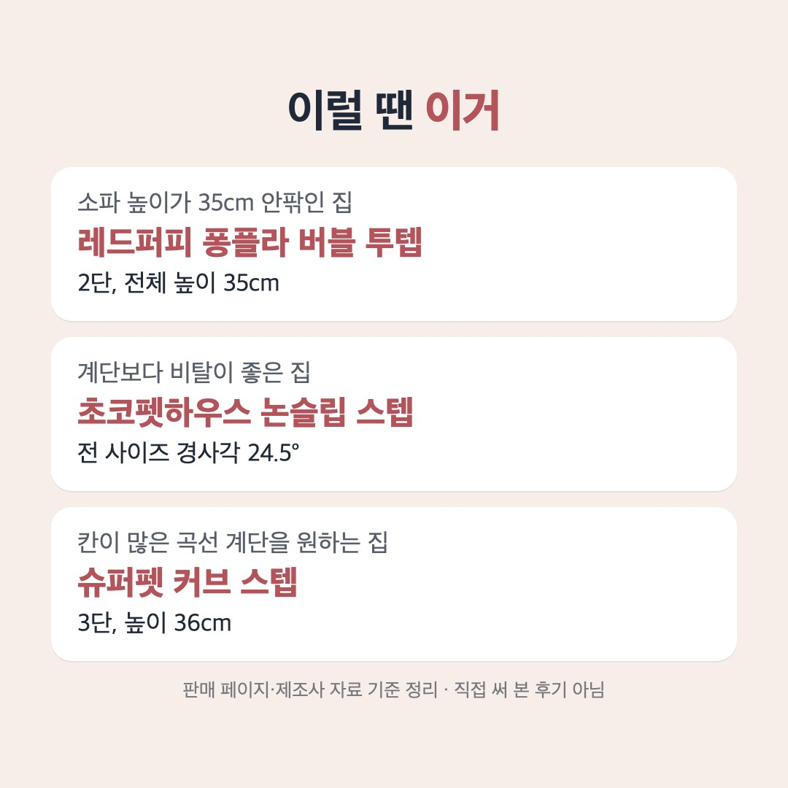

이 게시물은 쿠팡 파트너스 활동의 일환으로, 이에 따른 일정액의 수수료를 제공받습니다.
논슬립 강아지계단 높이, 소파 35cm면 2단 침대 48cm면 경사로
소파 윗면이 35cm 안팎이면 2단 퐁플라(전체 높이 35cm)나 3단 슈퍼펫(36cm), 비탈을 원하면 초코펫 경사로 일반형(38cm, 경사각 24.5°)이 높이가 맞아요. 침대처럼 45cm를 넘으면 초코펫 프리미엄형(48cm)만 남아요. 세 제품 판매 페이지의 상세 이미지에 적힌 높이예요.
소파에서 쿵 뛰어내리는 소리에 철렁하는 집이라면, 소파 윗면 높이를 이 숫자에 대 보면 돼요.
2단 스펀지 계단은 27,800원(상품평 8,351개), 3단 커브 계단은 쿠폰 적용가 28,400원, 경사로형은 51,500원이에요.

계단 꼭대기가 올라갈 자리보다 한참 낮으면, 마지막엔 다시 뛰어올라야 해요.
그래서 먼저 볼 건 소파·침대 윗면 높이예요.

우리 소파 높이엔 어느 제품이 맞나요?
윗면이 35~38cm에 가깝다면 상세에 적힌 높이는 이래요.
퐁플라 2단은 35cm(70×40×35cm), 슈퍼펫 3단은 36cm(폭 40·길이 70cm)예요.
초코펫 경사로는 일반형 38cm(40×64.5×38cm), 와이드형 36.5cm(60×64.5×36.5cm)예요.
침대처럼 45cm를 넘으면 퐁플라는 빠져요.
초코펫 프리미엄형 48cm(45×79×48cm)가 남아요.
슈퍼펫은 상세 도면에 4단 48cm(폭 40·길이 70cm)도 있지만, 링크한 건 3단이고 4단 판매 옵션은 확인하지 못했어요.
이때는 바닥 길이도 같이 봐야 해요.
계단형은 길이 70cm 정도, 초코펫 경사로는 64.5~79cm를 차지해요.
높이가 맞아도 아직은 후보일 뿐이에요. 견디는 무게 표기가 비어 있으니까요.
이 조건이면: 소파 윗면 35cm 안팎, 2단 계단 → 레드퍼피 퐁플라 버블 투텝(11월 6일 확인 가격 27,800원, 바뀔 수 있음)
이 조건이면: 계단보다 완만한 비탈 → 초코펫하우스 논슬립 스텝 일반형(11월 6일 확인 가격 51,500원, 바뀔 수 있음)
링크는 글 아래쪽에 있어요.
한 칸씩 오를까, 비탈을 걸어 오를까?
계단을 원하면 퐁플라나 슈퍼펫, 비탈을 원하면 초코펫이에요.
슈퍼펫은 '꺾임 없는 완만한 곡선' 모양이라고 해요.
초코펫은 전 사이즈 경사각 24.5°의 슬라이드형이에요.
초코펫 상세엔 '층계형 스텝은 넘어질 수 있고 관절에 무리를 줄 수 있다'는 판매자 설명이 있어요.
뒷받침하는 시험 자료는 찾지 못했고, 문구도 말티즈·포메·푸들 같은 소형견 위주예요.
그러니 경사로로 갈지는 이 설명보다, 계단과 완만한 비탈 중 어느 쪽을 원하는지로 정하세요.

발이 미끄러지거나 계단이 밀리진 않을까요?
미끄럼을 막는다고 적힌 자리가 제품마다 달라요.
퐁플라는 밀림방지 바닥에 압축 스펀지로 무게감을 줬다고 해요. 하네스에 거는 연결고리도 있어요.
슈퍼펫은 발이 닿는 윗면, 가구에 닿는 면, 바닥면 세 군데에 논슬립이 있다고 적혀 있어요.
초코펫은 윗면이 실리콘 원단이에요.
오줌 실수한 날, 빨까요 닦을까요?
커버를 벗겨 빨 수 있다고 적힌 건 계단형 둘이고, 초코펫은 닦는 방식이에요.
퐁플라는 커버가 분리돼 손세탁할 수 있다고 해요.
슈퍼펫은 커버를 30℃ 이하 단독 손세탁하길 권하고, 안쪽 스펀지는 세탁하면 안 된다고 적혀 있어요.
압축 포장이라 받은 뒤 1~2일 지나야 모양이 돌아온대요.
초코펫은 윗면·옆면이 방수 원단이라 물티슈로 닦는 방식이에요. 세탁 방법은 찾지 못했어요.
고양이가 침대를 오르내릴 계단을 찾는다면, 고양이계단 비교는 따로 정리해 두었어요: https://blog.naver.com/darri06/224467171435
세 제품 모두 견디는 무게는 상세에서 표기를 찾지 못했어요. 상품 문의에 아이 체중을 적어 확인하고, 초코펫으로 기울었다면 세탁 방법도 함께 물어보세요.

27,800원·28,400원·51,500원과 상품평 수는 11월 6일 22시 쿠팡 화면 기준이라 지금은 다를 수 있어요(슈퍼펫은 쿠폰 적용가, 쿠폰 전 29,900원). 치수·재질·세탁 문구는 판매 페이지와 상세 이미지에서 가져왔어요. 직접 써 본 후기는 아니에요.
레드퍼피 퐁플라 버블 투텝 펫스텝 — 가격·구매처 보기
초코펫하우스 반려동물 논슬립 스텝 — 가격·구매처 보기
슈퍼펫 강아지 3단 커브 스텝 — 가격·구매처 보기
#논슬립강아지계단 #강아지계단 #강아지슬로프 #펫스텝 #소파계단